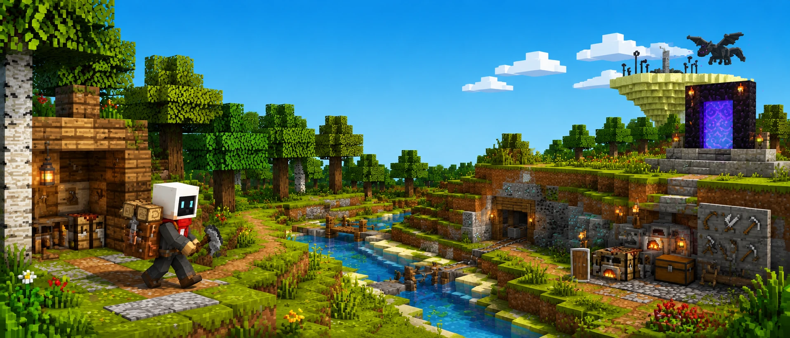
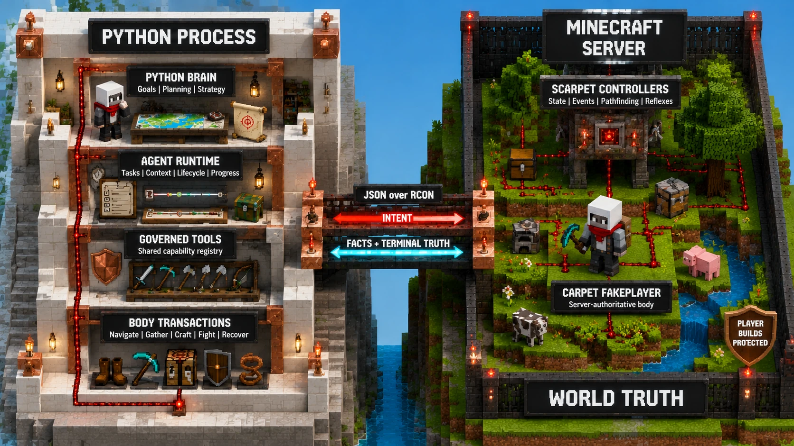
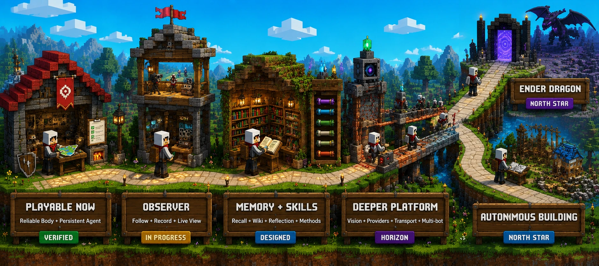

Ender Dragon, I will kill you.
一个拥有自适应思维的 AI Agent，用自然语言下达目标，自主规划、执行、观察、恢复，直到击败末影龙。
01 — 创意名称与介绍
MineBot 是一个运行在 Minecraft 开放世界中的 AI Agent 系统。用户只需提出自然语言目标 —— 例如"收集 64 个铁""制作钻石工具"或"从零开始击败末影龙" —— Agent 会自主规划、调用能力、观察结果、处理失败并持续推进任务。
Tell MineBot what you want in ordinary language. The model chooses a strategy, the harness keeps the thread, and a server-authoritative body does the physical work.
此前的 Minecraft Agent 项目（如 Mindcraft、mineflayer、Baritone）已经证明了 LLM 可以进入游戏、调用工具并完成任务。但它们诞生得较早，当时 Agent Harness 仍不完备，任务连续性、上下文管理、生命周期、进度判断和失败恢复通常没有被系统化解决。
MineBot 希望站在这些探索的基础上继续向前：不仅让 AI 会玩 Minecraft，更让它在随机地形、资源限制、危险和意外中，可靠地完成复杂长程任务。
02 — 目标用户及痛点
MineBot 面向 AI Agent 与机器人研究者、开发者、教育者，以及希望拥有真正 AI 伙伴的 Minecraft 玩家。当前许多 Agent Demo 可以完成短工具调用，但进入长期任务后，以下问题普遍存在：
长程任务中上下文溢出或遗忘，Agent 忘记自己正在做什么，任务链条断裂。
多个目标并行时互相干扰，缺少优先级治理，导致重复操作或死循环。
角色死亡后无法恢复目标，需要人类手动重启，丧失任务连续性。
"模型认为成功，但现实状态没有变化" —— 工具返回 OK 但世界状态未改变。
脚本式方法在预设环境中工作，遇到随机地形、未知资源分布立即失效。
缺少对危险（怪物、岩浆、坠落）的实时反射机制，无法主动规避威胁。
03 — 价值与意义
AI 为人类创造更大价值，最终离不开与机器人、物理硬件和现实环境的结合。但真实硬件实验 成本高、周期长，也难以快速复现复杂问题。
Minecraft 同时具备开放世界、物理规则、随机环境、资源约束、危险和长程依赖，是现实机器人的理想低成本试验场。
验证自主规划、工具治理、失败恢复和长期任务连续性 —— 这些正是下一代 AI Agent 的核心能力。
为玩家提供真正有记忆、有策略、能协作的 AI 伙伴，而非简单脚本 NPC。
MineBot puts deterministic machinery where language models are weak: physics, precise state, long-running execution, ownership, and reflexes. It leaves goals, trade-offs, and adaptation to the model.
04 — 系统架构
MineBot 采用三层分离架构：大脑（Brain）负责决策，身体（Body）负责执行，世界（World）提供权威状态。每一层的职责边界清晰，成功判定由服务端世界状态确认。
基于 openai-agents-python 运行模型/工具循环。MineBot 构建持久化控制平面：任务管理、上下文维护、生命周期治理、进度追踪和受控工具调用。大脑决定"做什么"。
Python Body 通过 JSON over RCON 与服务端交互，完成导航、采集、合成、熔炼、装备、战斗、恢复等物理目标。身体决定"怎么做"。每个结果都以结构化世界真相返回。
Scarpet 读取权威服务端状态并运行规划、控制器、事件和反射机制；Carpet 提供 FakePlayer 物理身体。成功只当权威世界和库存变化确认时才被接受。

MineBot 架构图：Python Brain + Agent Runtime + Governed Body ↔ JSON over RCON ↔ Scarpet Controllers + Carpet FakePlayer
代码结构（45 个 Python 模块 + 53 个服务端文件）：
05 — 已验证的核心能力
当前基线已在真实服务器中通过以下长程任务验证。成功由权威世界状态和库存变化确认，而非工具自报。
在随机生成的地形中自动寻路和移动
采集 64 个原木等长程目标已验证
工具门控的钻石获取链已打通
完整的合成、熔炼和装备流水线
近战和远程攻击，覆盖与交战
实时危险检测与自动规避
死亡后自动重生并恢复任务上下文
跟随玩家、给予物品、持续对话
06 — 方案对比
| 能力维度 | 传统 MC Bot | 早期 LLM Agent | MineBot |
|---|---|---|---|
| 物理与状态 | 客户端精确控制 | 依赖客户端报告 | 服务端权威验证 |
| 任务连续性 | 脚本无状态 | 易丢失上下文 | 持久化 Agent Harness |
| 失败恢复 | 脚本报错即停 | 失败后空转 | 观察-恢复-继续 |
| 死亡处理 | 需要人工重启 | 遗忘目标 | 自动重生+任务恢复 |
| 随机地形适应 | 固定路径 | 可适应 | 服务端真实寻路 |
| 快速反应 | 客户端反射 | 模型推理延迟 | 服务端反射机制 |
| 长期目标管理 | 无 | 弱 | 任务队列+进度追踪 |
07 — 项目路线图
可靠的身体和持久化的 Agent 是基础，而非终点。项目的两个北极星目标是不切实际的：从零开始击败末影龙，然后在开放世界中学习自主设计与建造。

采集 64 个原木、工具门控钻石获取、真实地形导航、跟随、战斗、生存反射、死亡恢复、重启协调、空闲唤醒 —— 全部在真实服务器中通过验证。
从原木到钻石镐的完整确定性工具链，验证了多步骤资源获取和合成管线。
实时相机模块，支持观察者控制和录制/直播推送。让 Agent 拥有"眼睛"。
长期记忆系统、Minecraft 领域知识库、可加载的 Skills 技能系统。
视觉感知能力、更丰富的模型提供商和传输层、多 Agent 世界。
从空手出生开始，自主生存、发展、击败末影龙。然后学习在开放世界中自主设计与建造。
08 — 技术栈
项目采用 Python 3.13 作为主要语言，目标平台为 Minecraft 26.1.2 Fabric 服务器，配合 Carpet 模组和 Scarpet 脚本语言。
09 — 交互方式
启动 MineBot 后，直接在控制台中输入自然语言指令即可。Agent 会自动解析目标、规划策略、执行动作并反馈进度。
开源项目
MineBot 采用 MIT 开源协议。欢迎 Star、Fork、贡献代码，或提 Issue 讨论。
⭐ 在 GitHub 查看项目